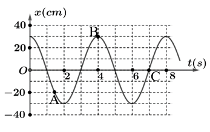

📋 Quy định làm bài
- Thời gian: 45 phút. Còn 10 phút hệ thống nhắc; hết giờ có thêm 5 phút gia hạn rồi tự động nộp.
- Bài làm ở chế độ toàn màn hình. Chuyển tab, mất focus, thoát toàn màn hình đều bị ghi nhận và báo cho giáo viên.
- Không dùng chuột phải, sao chép/dán, phím tắt. Trợ lý AI chỉ mở sau khi nộp bài. Phần tự luận: AI gợi ý điểm, giáo viên duyệt điểm chính thức.
PHẦN I. Câu trắc nghiệm nhiều phương án lựa chọn
Mỗi câu có 4 phương án, chỉ chọn một đáp án đúng (0,25 điểm).
1
Phương trình dao động điều hòa của một chất điểm: $x=A\mathrm{cos}\left( \omega t+\varphi\right)$. Phương trình vận tốc tương ứng của chất điểm là:
2
Một vật nhỏ khối lượng m dao động điều hòa trên trục Ox theo phương trình $x=A\mathrm{cos}\left( \omega t+\varphi\right)$. Cơ năng của vật được xác định bằng biểu thức?
3
Một em bé đang chơi xích đu. Để cho xích đu đung đưa như thế mãi thì đến điểm cao nhất thì người mẹ lại đẩy một cái để bổ sung năng lượng đúng bằng năng lượng đã mất trong một chu kì. Đây là dao động gì?
4
Dao động có chu kì, tần số không phụ thuộc vào các yếu tố bên ngoài mà chỉ phụ thuộc vào các đặc tính của hệ là dao động gì?
5
Hãy so sánh pha của li độ và gia tốc trong dao động điều hòa?
6
Trong phương trình dao động điều hòa $x = A\cos(\omega t + \varphi)$, $(\omega t + \varphi)$ gọi là đại lượng nào của dao động?
7
Một vật dao động điều hòa theo phương trình $x=6\cos(4\pi t)\ cm$. Biên độ dao động của vật là?
8
Trong dao động tắt dần, đại lượng có độ lớn giảm dần theo thời gian là
9
Trong dao động tuần hoàn, khoảng thời gian ngắn nhất sau đó trạng thái dao động lặp lại như cũ gọi là
10
Hiện tượng cộng hưởng chỉ có thể xảy ra với dao động nào?
11
Phương trình liên hệ giữa gia tốc và li độ trong dao động điều hòa?
12
Một vật nhỏ khối lượng m dao động điều hòa trên trục Ox theo phương trình $x=A\mathrm{cos}\left( \omega t+\varphi\right)$. Động năng của vật tại thời điểm t có biểu thức là?
13
Phương trình dao động điều hòa của một chất điểm: $x=A\mathrm{cos}\left( \omega t+\varphi\right)$. Phương trình gia tốc tương ứng của chất điểm là:
14
Trong dao động tắt dần, một phần cơ năng của vật dao động chuyển hóa thành dạng năng lượng nào?
15
Hình nào dưới đây không mô tả dao đông cơ?

16
Cho một vật dao động điều hòa với biên độ A dọc theo trục Ox và quanh gốc tọa độ O. Một đại lượng Y nào đó của vật phụ thuộc vào li độ x của vật theo đồ thị có dạng một phần của đường pa-ra-bôn như hình vẽ dưới. Y là đại lượng nào?

17
Trong dao động điều hòa, số dao động toàn phần vật thực hiện trong một đơn vị thời gian gọi là
18
Thực hiện thí nghiệm về dao động cưỡng bức như hình dưới. Năm con lắc đơn: (1), (2), (3), (4) và M (con lắc điều khiển) được treo trên một sợi dây. Ban đầu hệ đang đứng yên ở vị trí cân bằng. Kích thích M dao động nhỏ trong mặt phẳng vuông góc với mặt phẳng hình vẽ thì các con lắc còn lại dao động theo. Không kể M, con lắc dao động mạnh nhất là?

19
Cho một vật dao động điều hòa với biên độ A dọc theo trục Ox và quanh gốc tọa độ O. Một đại lượng Y nào đó của vật phụ thuộc vào li độ x của vật theo đồ thị có dạng một phần của đường pa-ra-bôn như hình vẽ dưới. Y là đại lượng nào?
20
Hiện tượng cộng hưởng cơ học gây hại trong trường hợp nào dưới đây?
PHẦN II. Câu trắc nghiệm đúng sai
Trong mỗi ý a), b), c), d) chọn Đúng hoặc Sai. Đúng 1 ý: 0,1 · 2 ý: 0,25 · 3 ý: 0,5 · 4 ý: 1,0 điểm.
1
Một vật dao động điều hòa dọc theo trục Ox có phương trình dao động $x=5\cos\left( 2\pi t+\frac{\pi}{3}\right)\ (cm)$ (t tính bằng s). $\pi=3,14$.
a) Chu kì dao động điều hòa là 1 Hz.
b) Vận tốc dao động điều hòa tại thời điểm t = 1 s xấp xỉ là $-27\ cm/s.$
c) Gia tốc của vật có độ lớn cực đại xấp xỉ là $197\ cm/s^{2}.$
d) Vị trí vật có động năng bằng 3 lần thế năng là $\pm2,5\ cm.$
2
Một vật dao động có đồ thị li độ - thời gian được mô tả như hình dưới. $\pi=3,14$.

a) Tần số dao động của vật là 0,25 Hz.
b) Tốc độ tại vị trí C của đồ thị là 0 cm/s.
c) Động năng của vật tại vị trí B là cực đại.
d) Từ thời điểm 4 s đến thời điểm 8 s có 4 lần vật cách vị trí cân bằng 20 cm.
PHẦN III. Câu trắc nghiệm trả lời ngắn
Điền đáp số (có thể dùng dấu phẩy hoặc dấu chấm thập phân). Mỗi câu 0,25 điểm.
1
Một vật dao động điều hòa có đồ thị li độ phụ thuộc thời gian như vẽ dưới. Tính số dao động vật thực hiện trong 1 s.

2
Một chất điểm dao động điều hòa có phương trình $x=5\mathrm{cos}\left( 2\pi t+\frac{\pi}{2}\right)\ cm$. Tính tốc độ trung bình của chất điểm trong $\frac{31}{6}$ s kể từ lúc bắt đầu dao động.
cm/s
3
Cho con lắc lò xo gồm lò xo nhẹ có độ cứng $k=50\ N/m$, vật nặng kích thước nhỏ có khối lượng $m=500\ g$ (Hình bên). Kích thích cho vật dao động điều hòa theo phương thẳng đứng. Chọn gốc thời gian là lúc vật qua vị trí có li độ $x=2,5\ cm$ với tốc độ $25\sqrt{3}\ cm/s$ theo phương thẳng đứng hướng xuống dưới. Chọn trục tọa độ Ox theo phương thẳng đứng, chiều dương hướng lên trên, gốc O trùng với vị trí cân bằng của vật. Lấy $g=10\ m/s^{2}$. Tính quãng đường đi được của vật kể từ lúc bắt đầu dao động đến khi tới vị trí có động năng bằng thế năng lần thứ 5.
cm